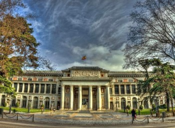

جميع الحقوق محفوظة لطالبتين جود ولمياء©
أسس متحف ديل برادو كمتحف من اللوحات الفنية والنحت، كما يحتوي على مجموعات متنوعة من أنواع أخرى من الزجاجات. تم التأسيس مع إنشاء جناح جديد، في الآونة الأخيرة في منطقة العرض الجديدة 400 لوحة، وأصبح يستخدم حاليًا للمعارض في الشتاء، برادو هو واحد من أكثر المواقع زيارة في العالم، واختير من بين أكبر المتاحف الفنية.